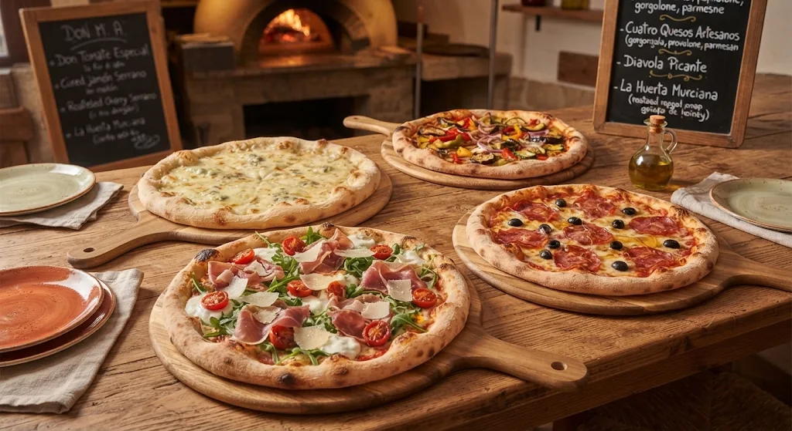

Nuestro Catálogo
- Don Tomate Especial (La de la casa): Base de tomate natural triturado, mozzarella fior di latte, jamón serrano curado, tomates cherry asados, rúcula fresca y lascas de parmesano.
- La Margarita del Horno: Salsa de tomate artesanal, doble de mozzarella fresca, hojas de albahaca recién cortadas y un chorrito de aceite de oliva virgen extra.
- Diavola Picante: Tomate, mozzarella, salami picante italiano, aceitunas negras y un toque de miel de romero.
- Cuatro Quesos Artesanos: Mozzarella, queso azul suave, provolone fundido y parmesano curado (con opción de base blanca sin tomate).
- La Huerta Murciana: Tomate, mozzarella, berenjena asada al horno de leña, pimiento rojo, calabacín y cebolla morada.
- Barbacoa a la Leña: Tomate, mozzarella, carne desmechada cocinada a baja temperatura, bacon crujiente, cebolla caramelizada y salsa barbacoa casera.
- Carbonara Tradicional: Base de crema suave y huevo, mozzarella, guanciale (o panceta curada) crujiente y pimienta negra recién molida.
- Trufa y Boletus: Base blanca de crema de trufa negra, mozzarella, setas salteadas al ajo y lascas de queso grana padano.
